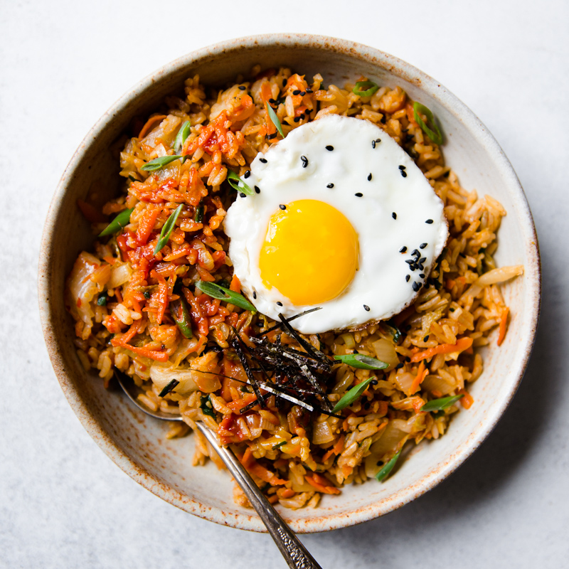

Kimchi Fried Rice Recipe
An easy & delicious classic Korean dish made with simple ingredients and a short cooking time!

Typically serves 2 people
Cooking time: 15-20 minutes
It's great for breakfast, lunch, or dinner, you can have this traditional goodie anytime!
While meat can be an optional addition, this is also a great vegetarian choice when looking for a quick meal. Comprised of mainly
chili paste and kimchi, this spicy rice bowl is both filling and packs quite a punch on the taste buds.
Ingredients
How to Make
- Heat up a pan and add the butter till fully melted.
- Add the kimchi, minced garlic, and yellow onion and stir fry till the onions are clear.
- Add the rice, kimchi juice, water and gochujang and stir the ingredients together for about 5-7 minutes.
- Add the sesame oil and turn off the heat. Completely stir till the oil is evenly distributed.
- In a separate pan, cook the 2 eggs sunny-side up style. Add them on top of the rice.
- Cut up the dried seaweed into small pieces and sprinkle them along with the chopped green onions on top, and you're ready to eat!